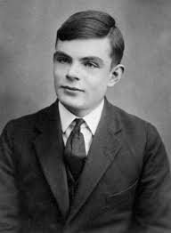

Historia de Alan Turing
Alan Turing fue un matemático, científico de la computación y criptógrafo. Se considera padre de la computación y creador de la informática tal y como la conocemos hoy en día. Desarrollo el concepto del algorítmo, base del pensamiento computacional. Tras entregar su vida a la humanidad y la ciencia, murió tras suicidarse en la carcel donde fue encerrado por homosexual.
Biografía
Texto de la biografía de Alan Turing Alan Turing nacido el 23 de junio de 1912 en Londres y fallecido el 7 de junio de 1954 en Cheshire. Fue un matemático, informático teórico, criptógrafo y filósofo inglés. Es considerado uno de los padres del ordenador. Durante la Segunda Guerra Mundial, trabajó en romper los códigos nazis (el código Enigma). También contribuyó al enigma de si las máquinas pueden pensar, es decir a la Inteligencia Artificial ...
¿Quién es y qué hizo?
Texto sobre quién es Alan Turing y sus logros Es considerado uno de los padres de la ciencia de la computación siendo el precursor de la informática moderna. Proporcionó una influyente formalización de los conceptos de algoritmo y computación: la máquina de Turing. Proporcionó una formalización de los algoritmos y la computación. Realizó la máquina de Turing...
No todo tiene solución
Explicación sobre la frase de Alan Turing "No todo tiene solución" En 1936 publicó el artículo “Sobre números computables, con una aplicación al Entscheidungsproblem En él definía qué era computable y qué no lo era. Lo computable era todo aquello que podía resolverse con un algoritmo (conjunto de instrucciones finito que, mediante pasos sucesivos, lleva a la solución de un problema). El resto eran tareas no computables....
Máquina de Turing
Información sobre la Máquina de Turing de Alan Turing Es un dispositivo que manipula símbolos sobre una tira de cinta de acuerdo a una tabla de reglas. Puede ser adaptada para simular la lógica de cualquier algoritmo de computador y es particularmente útil en la explicación de las funciones de una CPU dentro de un computador El concepto de Máquina de Turing fue introducido por Alan Turing en el trabajo On computable numbers, with an application to the Entscheidungsproblem , publicado por la Sociedad Matemática de Londres en 1936...

Tesis Church-Turing
Información sobre la Tesis Church-Turing de Alan Turing Formula hipotéticamente la equivalencia entre los conceptos de función computable y máquina de Turing, que expresado en lenguaje corriente vendría a ser: Todo algoritmo es equivalente a una máquina de Turing...

Sus aportaciones a la humanidad
Maquina Bomba
Permitiendo ganar la segunda guerra mundial
Maquina de Turing
Actualmente permite tener Compiladores para lenguajes de programación
Ajedres Computacional
En 1948 escribe el primer programa de ajedrez